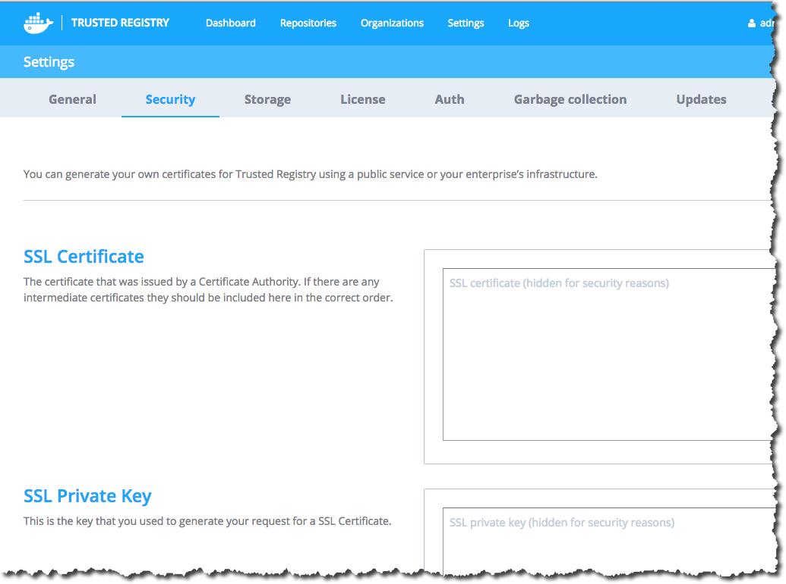
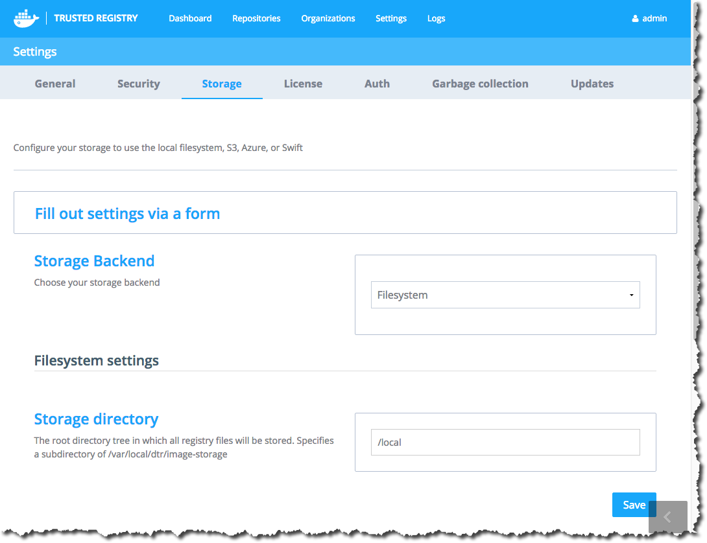
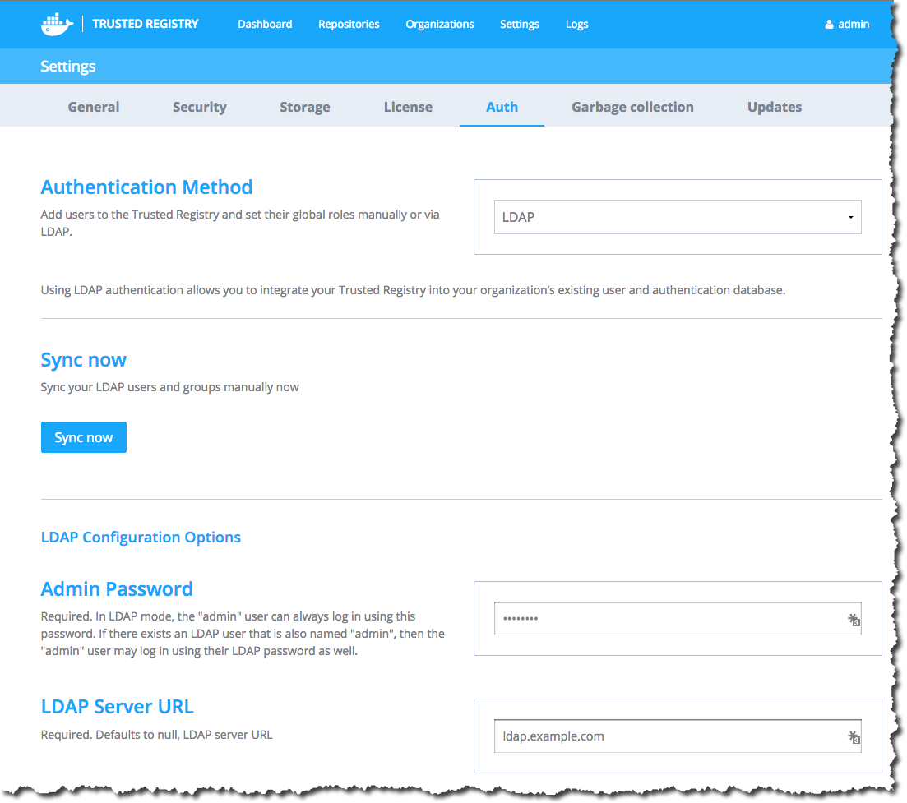

Configuring Docker Trusted Registry
Use this documentation to configure Docker Trusted Registry so it can
run in your environment.
Overview
To start, navigate to the Trusted Registry user interface (UI) > Settings to view configuration options. Configuring is grouped by the following:
- General Settings (for example, ports and proxies)
- Security settings
- Storage settings
- License
- Authentication settings
- Garbage collection
- Updates
- Docker daemon (this is set from the Trusted Registry CLI and not the UI)
Note:
Saving changes you’ve made to settings will restart various services, as follows:
- General settings: full Docker Trusted Registry restart
- License change: full Docker Trusted Registry restart
- SSL change: Nginx reload
- Storage config: only registries restart
- Authentication config: no restart
General Settings

Each setting on this page is explained in the Docker Trusted Registry UI.
- Domain Name: required defaults to an empty string, the fully qualified domain name assigned to the Docker Trusted Registry host.
- HTTP Port: defaults to 80, used as the entry point for the image storage service. To see load balancer status, you can query
http://<dtr-host>/load_balancer_status.
- HTTPS Port: defaults to 443, used as the secure entry point for the image storage service.
- HTTP proxy: defaults to an empty string, proxy server for HTTP requests.
- HTTPS proxy: defaults to an empty string, proxy server for HTTPS requests.
- No proxy: defaults to an empty string, proxy bypass for HTTP and HTTPS requests.
- Upgrade checking: enables or disables automatic checking for Docker Trusted Registry software updates.
Note: If you need Docker Trusted Registry to re-generate a self-signed certificate at some
point, you can change the domain name. Whenever the domain name does not match the current certificate,
a new self-signed certificate will be generated for the new domain. This also works with IP addresses.
Notary configuration
Note: Docker Trusted Registry’s integration of Docker Notary is an experimental feature. The use of a Notary server with Trusted Registry is not officially supported.
To use Docker Notary, you must deploy your own Notary server and then integrate
with your Trusted Registry through the Settings page. Then, you’ll need to
configure your Docker clients to use turst. Docker Trusted Registry proxies
requests to Notary, so you don’t need to explicitly trust Notary’s certificate
from the docker client.
Once you enable Notary integration and configure your Docker clients, your
organization can push and pull trusted images. After pushing images in this
configuration to Trusted Registry, you can see which image tags were signed by
viewing the appropriate repositories through Trusted Registry’s web interface.
To deploy a Notary server follow the instructions at Deploying
Notary. You can deploy a Notary
server on the same machine as Docker Trusted Registry. If you do this, you can
connect to the Notary server directly using the IP address of the docker0
interface. The interface’s address is typically 172.17.42.1. Read more about
Docker Networking to learn more about the
docker0 interface. You can also connect using the machine’s external IP
address and port combination provided you expose the proper port.
Once you’ve deployed your Notary server, do the following:
Return to Trusted Registry in your browser and configure the following
options:
Notary Server: This is the domain name or IP address where you deployed the Notary server.
Notary Verify TLS: This is off by default and you should verify that your connection to Notary works with this turned off
before trying to enable it. If Notary’s certificate is signed by a public Certificate Authority you can turn this
on and it should work given that the domain name (or IP) matches the one in the certificate.
Notary TLS Root CA: If you don’t use a publicly signed certificate but still want to have a secure connection between
Docker Trusted Registry and Notary, put the root Certificate Authority’s certificate here. You can also use a self signed certificate here.
Once you’ve configured the Notary settings, save them.
After you save the settings, Trusted Registry tries to connect to Notary to
confirm that the address is correct. It configures itself as a reverse proxy
to the Notary server to make it easier for clients to automatically use the
correct Notary server.
Configure your Docker client to use content trust operations.
To configure your Docker client to be able to push signed images to Docker
Trusted Registry refer to the CLI Reference’s Environment Variables
Section and
Notary Section.
This requires you to set the DOCKER_CONTENT_TRUST variable and configure
your system to trust Docker Trusted Registry’s TLS certificate if it doesn’t
already.
Use a client to push an image with trust.
Verify the image is signed by visiting the image repository’s page through
the Trusted Registry interface.
Security

- SSL Certificate: Used to enter the hash (string) from the SSL Certificate.
This cert must be accompanied by its private key, entered below.
- SSL Private Key: The hash from the private key associated with the provided
SSL Certificate (as a standard x509 key pair).
In order to run, Docker Trusted Registry requires encrypted communications via HTTPS/SSL between (a) the Docker Trusted Registry and your Docker Engine(s), and (b) between your web browser and the Docker Trusted Registry admin server. There are a few options for setting this up:
- You can use the self-signed certificate Docker Trusted Registry generates by default.
- You can generate your own certificates using a public service or your enterprise’s infrastructure. See the Generating SSL certificates section for the options available.
If you are generating your own certificates, you can install them by following the instructions for
Adding your own registry certificates to Docker Trusted Registry.
However, if you choose to use the Trusted Registry-generated certificates, or
the certificates you generate yourself are not trusted by your client Docker
hosts, you will need to do one of the following:
Generating SSL certificates
There are three basic approaches to generating certificates:
Most enterprises will have private key infrastructure (PKI) in place to
generate keys. Consult with your security team or whomever manages your private
key infrastructure. If you have this resource available, Docker recommends you
use it.
If your enterprise can’t provide keys, you can use a public Certificate
Authority (CA) like “InstantSSL.com” or “RapidSSL.com” to generate a
certificate. If your certificates are generated using a globally trusted
Certificate Authority, you won’t need to install them on all of your
client Docker daemons.
Use the self-signed registry certificate generated by Docker Trusted
Registry, and install it onto the client Docker daemon hosts as seen in the
following section.
Adding your own Registry certificates to Docker Trusted Registry
Whichever method you use to generate certificates, once you have them you can
set up your Docker Trusted Registry server to use them by navigating to the
“Settings” page, going to “Security,” and putting the SSL Certificate text
(including all intermediate Certificates, starting with the host) into the “SSL
Certificate” edit box, and the previously generated Private key into the “SSL
Private Key” edit box.
Click Save, and then wait for the Docker Trusted Registry Admin site to restart
and reload. It should now be using the new certificate.
Once the “Security” page has reloaded, it shows # hashes instead of the
certificate text you pasted in.
If your certificate is signed by a chain of Certificate Authorities that are
already trusted by your Docker daemon servers, you can skip the following
“Installing registry certificates” step.
Installing Registry certificates on client Docker daemons
If your certificates do not have a trusted Certificate Authority, you will need
to install them on each client Docker daemon host.
The procedure for installing the Docker Trusted Registry certificates on each
Linux distribution has slightly different steps.
You can test this certificate using curl:
$ curl https://dtr.yourdomain.com/v2/
curl: (60) SSL certificate problem: self signed certificate
More details here: http://curl.haxx.se/docs/sslcerts.html
curl performs SSL certificate verification by default, using a "bundle"
of Certificate Authority (CA) public keys (CA certs). If the default
bundle file isn't adequate, you can specify an alternate file
using the --cacert option.
If this HTTPS server uses a certificate signed by a CA represented in
the bundle, the certificate verification probably failed due to a
problem with the certificate (it might be expired, or the name might
not match the domain name in the URL).
If you'd like to turn off curl's verification of the certificate, use
the -k (or --insecure) option.
$ curl --cacert /usr/local/etc/dtr/ssl/server.pem https://dtr.yourdomain.com/v2/
{"errors":[{"code":"UNAUTHORIZED","message":"access to the requested resource is not authorized","detail":null}]}
Continue by following the steps corresponding to your chosen OS.
Ubuntu/Debian
$ export DOMAIN_NAME=dtr.yourdomain.com
$ openssl s_client -connect $DOMAIN_NAME:443 -showcerts </dev/null 2>/dev/null | openssl x509 -outform PEM | sudo tee /usr/local/share/ca-certificates/$DOMAIN_NAME.crt
$ sudo update-ca-certificates
Updating certificates in /etc/ssl/certs... 1 added, 0 removed; done.
Running hooks in /etc/ca-certificates/update.d....done.
$ sudo service docker restart
docker stop/waiting
docker start/running, process 29291
RHEL/Centos
$ export DOMAIN_NAME=dtr.yourdomain.com
$ openssl s_client -connect $DOMAIN_NAME:443 -showcerts </dev/null 2>/dev/null | openssl x509 -outform PEM | sudo tee /etc/pki/ca-trust/source/anchors/$DOMAIN_NAME.crt
$ sudo update-ca-trust
$ sudo /bin/systemctl restart docker.service
Docker Machine and Boot2Docker
You’ll need to make some persistent changes using bootsync.sh in your
Boot2Docker-based virtual machine (as documented in local customization). To do this:
docker-machine ssh dev to enter the VMvi /var/lib/boot2docker/bootsync.sh (create it if it doesn’t exist, or edit it if it does)
Install the CA cert (or the auto-generated cert) by adding the following to
your /var/lib/boot2docker/bootsync.sh:
#!/bin/sh
cat /var/lib/boot2docker/server.pem >> /etc/ssl/certs/ca-certificates.crt
Then get the certificate from the new Docker Trusted Registry server using:
$ openssl s_client -connect dtr.yourdomain.com:443 -showcerts </dev/null 2>/dev/null | openssl x509 -outform PEM | sudo tee -a /var/lib/boot2docker/server.pem
If your certificate chain is complicated, you may want to use the changes in
Pull request 807
Now you can either reboot your virtual machine, or run the following to
install the server certificate, and then restart the Docker daemon.
$ sudo chmod 755 /var/lib/boot2docker/bootsync.sh
$ sudo /var/lib/boot2docker/bootsync.sh
$ sudo /etc/init.d/docker restart`.
If you can’t install the certificates
If for some reason you can’t install the certificate chain on a client Docker host,
or your certificates do not have a global CA, you can configure your Docker daemon to run in “insecure” mode. This is done by adding an extra flag,
--insecure-registry host-ip|domain-name, to your client Docker daemon startup flags.
You’ll need to restart the Docker daemon for the change to take effect.
This flag means that the communications between your Docker client and the Docker Trusted Registry
Registry server are still encrypted, but the client Docker daemon is not
confirming that the Registry connection is not being hijacked or diverted.
Note: If you enter a “Domain Name” into the “Security” settings, it needs
to be DNS resolvable on any client Docker daemons that are running in
“insecure-registry” mode.
To set the flag, follow the directions below for your operating system.
Ubuntu
On Ubuntu 14.04 LTS, you customize the Docker daemon configuration with the
/etc/defaults/docker file.
Open or create the /etc/defaults/docker file, and add the
--insecure-registry flag to the DOCKER_OPTS setting (which may need to be
added or uncommented) as follows:
DOCKER_OPTS="--insecure-registry dtr.yourdomain.com"
Then restart the Docker daemon with sudo service docker restart.
RHEL/Centos
On RHEL/Centos, you customize the Docker daemon configuration with the
/etc/sysconfig/docker file.
Open or create the /etc/sysconfig/docker file, and add the
--insecure-registry flag to the OPTIONS setting (which may need to be
added or uncommented) as follows:
OPTIONS="--insecure-registry dtr.yourdomain.com"
Then restart the Docker daemon with sudo service docker restart.
Docker Machine and Boot2Docker
In your Boot2Docker-based virtual machine, you customize the Docker daemon configuration with the
/var/lib/boot2docker/profile file.
Open or create the /var/lib/boot2docker/profile file, and add an EXTRA_ARGS
setting as follows:
EXTRA_ARGS="--insecure-registry dtr.yourdomain.com"
Then restart the Docker daemon with sudo /etc/init.d/docker restart.
Image Storage Configuration
Docker Trusted Registry image storage can be configured to use the local filesystem, or a cloud service
such as S3 or Azure.
To set up storage settings, navigate to the Trusted Registry dashboard > Settings > Storage.
See the Registry configuration
documentation for the full options specific to each driver.
Storage drivers can be added or customized through the Docker Registry storage driver
API.

After you select the image storage method you would like to use from the
drop-down menu near the top of the page, the UI changes to reflect the
configuration settings appropriate to the selected method. You can either use
the storage specific input boxes to configure the most common settngs for local
filesystem, S3, or Azure storage backends, or use the full Yaml configuration
file upload to have more detailed control.
You can either use the storage specific input boxes to configure the most common
settngs for local filesystem, S3, or Azure storage backends, or use the full
Yaml configuration file upload to have more detailed control.
Note: Changing your storage backend requires you to restart the Trusted Registry.
You can view the current storage.yaml file on your Docker Trusted Registry
Docker host in the /usr/local/etc/dtr/ directory.
Filesystem settings
The filesystem storage backend
has only one setting - the “Storage directory”, the subdirectory of /var/local/dtr/image-storage
in which all registry files are stored.
The default value of /local means the files are stored in /var/local/dtr/image-storage/local.
S3 settings
The S3 storage backend page allows you to set the
“AWS region”, “Bucket name”, “Access Key”, and “Secret Key”.
Azure settings
Set the “Account name”, “Account key”, “Container”, and “Realm” on the Azure storage backend page.
Openstack Swift settings
View the openstack Swift settings
documentation so that you can set up your storage settings: authurl, username,
password, container, tenant, tenantid, domain, domainid, insecureskipverify,
region, chunksize, and prefix.
Yaml configuration file
If the previous Quick setup options are not sufficient to configure your
Registry options, you can upload a YAML file. The schema of this file is
identical to that used by the Registry.
If you are using the file system driver to provide local image storage, you
will need to specify a root directory which will get mounted as a sub-path of
/var/local/dtr/image-storage. The default value of this root directory is
/local, so the full path to it is /var/local/dtr/image-storage/local.
Authentication
Use the “Authentication” settings to control access to the Docker Trusted
Registry web admin tool and to the Docker Trusted Registry.
The current authentication methods are None, Managed and LDAP.
Note: if you have issues logging into the Docker Trusted Registry admin web interface after changing the authentication
settings, you may need to use the emergency access to the Docker Trusted Registry admin web interface.
No authentication
No authentication means that everyone that can access your Docker Trusted
Registry web administration site. This is not recommended for any use other than
testing.
Managed authentication
With Managed authentication, the Docker Trusted Registry admin can control users’ access by setting username/password pairs. The admin can then use the API to give these users global “admin”, “read-write” or “read-only” privileges while assigning them Organization, Team or User repository access.
The “read-only” role can pull all images from the registry, “read-write” can
push and pull all images, and the “admin” role can push and pull and also access
the web administration UI and metrics dashboard.
When you create users and assign their roles through the API, you do not need
to assign those users roles using the Docker Trusted Registry admin UI.
- Choose the appropriate button to add one user, or to upload a CSV file containing username, password pairs, and selection boxes for “admin”,
“read-write”, and “read-only” roles.
- You can also create, or allow others to create the username, password pair using the
Account API.
LDAP authentication
Using LDAP authentication allows you to integrate your Docker Trusted Registry into your
organization’s existing LDAP user and authentication database.
To improve the performance of Docker Trusted Registry’s Access Control Lists,
User and Group membership data is synced into Docker Trusted Registry’s database
at a configurable LDAP Sync Interval. User passwords are not transferred
during syncing. The Trusted Registry defers to the LDAP server to validate
username/password pairs.
Note: LDAP syncing creates new users that that do not already exist in the Trusted Registry. Any existing users that are not found by the LDAP sync are marked as inactive.
You can also sync team membership with the LDAP group. This is performed after you have finished configuring your settings.
Because connecting to LDAP involves existing infrastructure external to Docker Trusted Registry and Docker, you need to gather the details required to configure Docker Trusted Registry for your organization’s particular LDAP implementation.
You can test that you have the correct LDAP server information by connecting to
the LDAP server from inside a Docker container running on the same server as
your Docker Trusted Registry:
Note: if the LDAP server is configured to use StartTLS, then you need to
add -Z to the ldapsearch command examples below.
docker run --rm -it svendowideit/ldapsearch -h <LDAP Server hostname> -b <User Base DN> -D <Search User DN> -w <Search User Password>
Or if the LDAP server is set up to allow anonymous access (which means your
Search User DN and Search User Password settings will remain empty):
docker run --rm -it svendowideit/ldapsearch -h <LDAP Server hostname> -b <User Base DN> -x
The result of these queries should be a (very) long list - if you get an
authentication error, then the details you have are not sufficient - contact
your organization’s LDAP team.
The User Login Attribute key setting must match the field used in the LDAP
server for the user’s login-name. On OpenLDAP, it’s generally uid, and on
Microsoft Active Directory servers, it’s sAMAccountName. The ldapsearch
output should allow you to confirm which setting you need.

LDAP Configuration options
- Admin Password: required use this password to login as the user
admin in case Docker Trusted Registry is unable to authenticate you using your LDAP server. This account may be used to login to the Trusted Registry and correct identity and authentication settings.
- LDAP Server URL: required defaults to null, LDAP server URL (e.g., - ldap://example.com)
- Use StartTLS: defaults to unchecked, check to enable StartTLS
- User Base DN: required defaults to null, user base DN in the form (e.g., - dc=example,dc=com)
- User Login Attribute: required defaults to null, user login attribute (e.g., - uid or sAMAccountName)
- Search User DN: required defaults to null, search user DN (for example, domain\username)
- Search User Password: required defaults to null, search user password
- LDAP Sync Interval: required defaults to 1h0m0s, sets the interval for Docker Trusted Registry to sync with the LDAP database.
- User Search Filter: Users on your LDAP server are synced to Docker Trusted Registry’s local database using this search filter. Objects in LDAP that match
this filter and have a valid “User Login Attribute” are created as a local user
with the “User Login Attribute” as their username. Only these users are able to
login to the Trusted Registry.
- Admin LDAP DN: required This field is used to identify the group object on your LDAP server which is synced to the system administrators list.
- Admin Group Member Attribute: required This value matches the name of the attribute on this group object which corresponds to the Distinguished Name
of the group member objects.
Confirm login with current configuration
You can test your current LDAP configuration before saving it by entering a test
username and password and then clicking “Try Login”. If the login succeeds, your
configuration is working.
Docker daemon logs
Both the Trusted Registry and the Docker daemon collect and store log messages. To limit duplication of the Docker daemon logs, add the following parameters in a Trusted Registry CLI to the Docker daemon and then restart the daemon.
docker daemon --log-opt max-size 100m max-file=1
To learn about Trusted Registry logs, view the Logs tab in the admin guide documentation.
Next Steps
For information on getting support for Docker Trusted Registry, go to Support information.